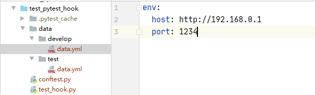

Pytest测试框架功能非常多，它其实就是由一组插件组成的，具有大量的插件，可以通过插件来扩展、定制功能，能满足大部分的测试需求。本文介绍pytest插件的开发方法，帮助更好的理解pytest测试框架。
pytest插件介绍
pytest的三种插件
pytest插件通过hook函数来实现，pytest主要包括以下三种插件
- 内置插件：pytest内部的_pytest目录中加载：
\Lib\site-packages\_pytest\hookspec.py - 外部插件：pip install 插件，通过setuptools的Entry points机制来发现外部插件，可用插件列表：https://docs.pytest.org/en/latest/reference/plugin_list.html
- 本地插件：conftest.py插件，pytest自动模块发现机制，在项目根目录下的conftest文件起到全局作用，在项目下的子目录中的conftest.py文件作用范围只能在该层级及以下目录生效。
他们的加载顺序为：
- 内置插件
- 外部插件
- 本地插件
pytest的hook函数
hook函数(钩子函数)是程序中预留的函数（相当于暴露了一个钩子），如果我们需要在程序某个步骤执行某个操作，我们就直接重写特定的钩子函数（挂载到钩子上），这样就实现了我们要增加的功能。没有挂载或者注册钩子时，它就是空的，也就是没有执行任何操作。
Pytest 的hook函数可查看\Lib\site-packages\_pytest\hookspec.py 文件， Pytest hook函数的执行顺序如下(https://github.com/pytest-dev/pytest/issues/3261)：1
2
3
4
5
6
7
8
9
10
11
12
13
14
15
16
17
18
19
20
21
22
23
24
25
26
27
28
29
30
31
32
33
34
35
36
37root
└── pytest_cmdline_main
├── pytest_plugin_registered
├── pytest_configure
│ └── pytest_plugin_registered
├── pytest_sessionstart
│ ├── pytest_plugin_registered
│ └── pytest_report_header
├── pytest_collection
│ ├── pytest_collectstart
│ ├── pytest_make_collect_report
│ │ ├── pytest_collect_file
│ │ │ └── pytest_pycollect_makemodule
│ │ └── pytest_pycollect_makeitem
│ │ └── pytest_generate_tests
│ │ └── pytest_make_parametrize_id
│ ├── pytest_collectreport
│ ├── pytest_itemcollected
│ ├── pytest_collection_modifyitems
│ └── pytest_collection_finish
│ └── pytest_report_collectionfinish
├── pytest_runtestloop
│ └── pytest_runtest_protocol
│ ├── pytest_runtest_logstart
│ ├── pytest_runtest_setup
│ │ └── pytest_fixture_setup
│ ├── pytest_runtest_makereport
│ ├── pytest_runtest_logreport
│ │ └── pytest_report_teststatus
│ ├── pytest_runtest_call
│ │ └── pytest_pyfunc_call
│ ├── pytest_runtest_teardown
│ │ └── pytest_fixture_post_finalizer
│ └── pytest_runtest_logfinish
├── pytest_sessionfinish
│ └── pytest_terminal_summary
└── pytest_unconfigure
我们可以对上面的hook函数进行改写，实现某些功能。我在以前的pytest文章中（Pytest测试框架（三）：pytest fixture 用法）介绍了fixture 插件的用法，fixture实现的功能其实也对pytest的hook函数进行了改写，比如pytest_generate_tests，pytest_sessionstart等hook函数，大家如果感兴趣可以查看源码：\Lib\site-packages\_pytest\fixtures.py
pluggy插件系统
前面简要介绍了pytest插件，这些插件是怎么管理的呢？pytest的大量插件使用pluggy进行管理，pluggy是pytest使用的一个插件系统，用于pytest插件的管理和钩子调用。也就是说，pluggy使pytest具有了钩子功能，实现主机（主程序）与插件的连接。
pytest插件：中文编码
先写一个测试用例test_hook.py:1
2
3
4
5
6
7#!/usr/bin/python3
#-*-coding:utf-8-*-
import pytest
def test_name(name):
print(name)
执行：1
$ pytest -vs test_hook.py::test_name
结果（只截取部分）：1
2
3
4
5test_hook.py::test_name[\u5f20\u4e09] 张三
PASSED
test_hook.py::test_name[\u674e\u56db] 李四
PASSED
我们发现用例名字编码格式为Unicode，无法显示中文。
怎么解决呢？我们可以对pytest hook函数pytest_collection_modifyitems()进行重写：1
2
3
4
5
6
7
8
9
10def pytest_collection_modifyitems(
session: "Session", config: "Config", items: List["Item"]
) -> None:
""" called after collection has been performed, may filter or re-order
the items in-place.
:param _pytest.main.Session session: the pytest session object
:param _pytest.config.Config config: pytest config object
:param List[_pytest.nodes.Item] items: list of item objects
"""
根据注释我们知道这个hook函数在用例收集完成后进行调用，可对用例进行过滤或者重新排序（修改用例执行顺序的pytest-ordering插件就修改了这个hook函数）
接下来开始修改这个hook函数，对用例名进行解码并反转用例顺序，在测试用例同级目录下新建conftest.py函数，修改代码如下：1
2
3
4
5
6
7
8
9
10#!/usr/bin/python3
#-*-coding:utf-8-*-
from typing import List
def pytest_collection_modifyitems(session, config, items: List):
for item in items:
item.name = item.name.encode('utf-8').decode('unicode-escape')
item._nodeid = item.nodeid.encode('utf-8').decode('unicode-escape')
items.reverse()
items就是收集到的测试用例，可对它进行各种操作。
再次执行：1
$ pytest -vs test_hook.py::test_name
结果（只截取部分）：1
2
3
4test_hook.py::test_name[李四] 李四
PASSED
test_hook.py::test_name[张三] 张三
PASSED
解码成功，并且顺序反转了。
添加命令行参数
通过改写hook函数pytest_addoption()可以实现添加自定义的命令行参数，几乎每个pytest 插件都会使用这个hook方法。下面在conftest.py中改写pytest_addoption()方法：1
2
3
4
5
6
7
8# 添加一个命令行参数
def pytest_addoption(parser, pluginmanager):
mygroup = parser.getgroup("testgroup") #group将下面所有的 optiongroup都展示在这个group下。
mygroup.addoption("--env", #注册一个命令行选项
default='test', # 参数的默认值
dest = 'env', # 存储的变量
help = 'set your run env' #帮助提示参数的描述信息
)
然后我们在命令行中输入pytest -h，在打印的帮助信息中，我们可以看到添加的自定义参数：1
2testgroup:
--env=ENV set your run env
接下来获取这个参数，在conftest.py中添加如下代码：1
2
3
4
5
6
7
8
9
10
11
12
13
def cmdoption(request):
env = request.config.getoption("--env", default='test')
if env == "test":
print("test环境")
datapath = "data/test/data.yml"
if env == "develop":
print("开发环境")
datapath = "data/develop/data.yml"
with open(datapath) as f:
datas = yaml.safe_load(f)
return env,datas
测试数据：

编写测试用例：1
2
3
4
5
6def test_env(cmdoption):
env,datas = cmdoption
host = datas['env']['host']
port = datas['env']['port']
url = str(host) + ":" + str(port)
print(url)
执行测试用例：1
$ pytest -vs test_hook.py::test_env
结果（只截取部分）：1
2
3test_hook.py::test_env test环境
http://192.168.11.1:4567
PASSED
传递参数：1
$ pytest -vs --env develop test_hook.py::test_env
结果（只截取部分）：1
2
3test_hook.py::test_env 开发环境
http://192.168.0.1:1234
PASSED
传递成功
打包发布
你的Python插件开发完成后，可以对它进行打包发布，方便给别人使用，打包后也可以发布代码到到PyPI上，可参考Python打包文档：https://packaging.python.org/tutorials/packaging-projects/ ，下面介绍Python打包过程。
1、创建包文件
1 | pytest-encode/ |
setup.py是一个构建脚本：1
2
3
4
5
6
7
8
9
10
11
12
13
14
15
16
17
18
19
20
21
22
23
24
25
26
27
28
29
30
31
32
33
34
35
36
37
38import setuptools
setuptools.setup(
name="pytest-encode", # Replace with your own username
version="0.0.1",
author="hiyongz",
author_email="zhiyo2016@163.com@example.com",
description="set your encoding",
long_description="show Chinese for your mark.parametrize().",
url="https://github.com/pypa/sampleproject",
project_urls={
"Bug Tracker": "https://github.com/pypa/sampleproject/issues",
},
classifiers=[
"Programming Language :: Python :: 3",
"Framework :: Pytest",
"Topic :: Software Develoment :: Testing",
],
license='MIT License',
packages=['pytest_encode'],
keywords=[
"pytest",
"py.test",
"pytest_encode",
],
install_requires=[
'pytest'
],
python_requires=">=3.6",
# 入口模块或者入口函数
entry_points={
'pytest11':[
'pytest-encode = pytest_encode'
]
},
zip_safe=False,
)
- 其中依赖包可以通过如下命令生成：
1
$ pip freeze >requirements.txt
- entry_points为入口函数，使用pluggy插件中PluginManager类的load_setuptools_entrypoints方法加载，其中pytest11为入口点，这是官方定义的固定入口点，用于发现插件，参考https://docs.pytest.org/en/latest/how-to/writing_plugins.html
__init__.py：1
2
3
4
5
6
7
8
9
10
11
12
13
14
15
16
17
18
19
20
21
22
23
24
25
26
27
28import logging
from typing import List
import pytest
logging.basicConfig(level=logging.INFO,
# 日志格式
# 时间、代码所在文件名、代码行号、日志级别名字、日志信息
format='%(asctime)s %(filename)s[line:%(lineno)d] %(levelname)s %(message)s',
# 打印日志的时间
datefmt='%a, %d %b %Y %H:%M:%S',
# 日志文件存放的目录（目录必须存在）及日志文件名
filename='report.log',
# 打开日志文件的方式
filemode='w'
)
logger = logging.getLogger(__name__)
def pytest_collection_modifyitems(session, config, items: List):
for item in items:
item.name = item.name.encode('utf-8').decode('unicode-escape')
item._nodeid = item.nodeid.encode('utf-8').decode('unicode-escape')
# 添加login标签
# pytest -vs -m login test_hook.py
if 'login' in item.nodeid:
item.add_marker(pytest.mark.login)
items.reverse()
2、打包
打包需要安装两个库：
- wheel：
pip install wheel - setuptools：
pip install setuptools
进入包目录（pytest-encode）下，执行目录：1
$ python setup.py sdist bdist_wheel
命令执行完成后，新生成如下文件：1
2
3
4
5
6
7
8
9
10
11
12
13
14
15
16
17pytest-encode/
├── build/
├── bdist.win-amd64
└── lib
└── pytest_encode
└── __init__.py
├── dist/
├── pytest-encode-0.0.1.tar.gz
└── pytest_encode-0.0.1-py3-none-any.whl
└──pytest_encode.egg-info/
├── dependency_links.txt
├── entry_points.txt
├── not-zip-safe
├── PKG-INFO
├── requires.txt
├── SOURCES.txt
└── test_encode.py
pytest-encode-0.0.1.tar.gz为源码包，pytest_encode-0.0.1-py3-none-any.whl可以通过pip install命令安装
3、测试打包文件
我们新建一个Python虚拟环境，在新的虚拟环境下执行：1
2
3
4
5$ pip list
Package Version
---------- -------
pip 21.0.1
setuptools 54.2.0
只安装了两个包，下面安装刚才生成的包文件：1
$ pip install pytest_encode-0.0.1-py3-none-any.whl
它会自动安装setup.py中定义的依赖包。
然后在新的虚拟环境中编写测试用例并执行：1
2
3
4
5
6
7import pytest
from pytest_encode import logger
def test_name(name):
logger.info("测试编码")
print(name)
1 | $ pytest -vs test_encode.py::test_name |
结果（只截取部分）：1
2
3
4test_hook.py::test_name[李四] 李四
PASSED
test_hook.py::test_name[张三] 张三
PASSED
解码成功，并且生成了日志文件：
report.log：1
2Sat, 03 Apr 2021 20:21:45 test_encode.py[line:13] INFO 测试编码
Sat, 03 Apr 2021 20:21:45 test_encode.py[line:13] INFO 测试编码
表明安装的包生效了。
4、发布包
使用Twine来上传包到PyPI，需要注册一个PyPI账号
然后安装twine:1
$ pip install twine
上传：1
$ twine upload --repository test-encode dist/*
上传过程中会让你输入前面注册的用户名和密码，上传成功后就可以在PyPI上查看
参考资料
- https://docs.pytest.org/en/latest/how-to/writing_plugins.html
- https://docs.pytest.org/en/stable/reference.html?#hooks
- https://docs.pytest.org/en/stable/_modules/_pytest/hookspec.html#pytest_cmdline_parse
- https://github.com/pytest-dev/pytest/issues/3261
- https://packaging.python.org/tutorials/packaging-projects/
- pytest-ordering：https://github.com/ftobia/pytest-ordering
- pluggy：https://pluggy.readthedocs.io/en/latest/
本文标题:Pytest插件开发
文章作者:hiyo
文章链接:https://hiyongz.github.io/posts/pytest-plugin/
许可协议:本博客文章除特别声明外，均采用CC BY-NC-ND 4.0 许可协议。转载请保留原文链接及作者。